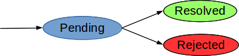

JavaScriptin suoritusympäristö on yksisäikeinen
Aikaa vieviä toimenpiteitä ei ole varaa jäädä odottelemaan synkronisesti
Tästä syystä mm. Ajax-kutsut, tietokantahaut ja tiedostojen käsittely tehdään lähes aina asynkronisesti
function readJSONSync(filename) {
return JSON.parse(fs.readFileSync(filename, 'utf8'));
}function readJSON(filename, callback){
fs.readFile(filename, 'utf8', function (err, res){
if (err) return callback(err);
callback(null, JSON.parse(res));
});
}Asynkronisuus monimutkaistaa toteutusta
Erityisesti virhekäsittelyn lisääminen asynkroniseen ratkaisuun tekee rakenteesta helposti sekavan
function readJSON(filename, callback){
fs.readFile(filename, 'utf8', function (err, res){
if (err) return callback(err);
try {
res = JSON.parse(res);
} catch (ex) {
return callback(ex);
}
callback(null, res);
});
}Promise on olio, joka "lupaa" palauttaa arvon
Promise on yhdessä kolmesta tilasta

var p = new Promise(function(resolve, reject) {
// call resolve or reject
});Promise-oliolla on metodi then
then ottaa (vapaaehtoisina) parametreinaan funktiot
onFulfilled - kutsutaan kun lupaus täytettyonRejected - kutsutaan kun lupaus hylättythen palauttaa uuden promisen
onFulfilled / onRejected -funktioistacreatePromise1().then(function(value1) { // onFulfilled
return createPromise2(value1);
}).then(function(value2) { // onFulfilled
console.log("Final result:", value2);
},
function(err) { // onRejected
// All the errors end up here.
});then-metodin paluuarvo riippuu siitä mihin tilaan promise päätyionFulfilled-funktion palauttama uusi promise
(createPromise2)then:illä ei ole onRejected-funktiota,
palautuu hylätty promise sellaisenaanthen:in
onRejected-funktiossareadFile olisi toteutettu promise:na...function readFile(filename, enc){
return new Promise(function (fulfill, reject){
fs.readFile(filename, enc, function (err, res){
if (err) reject(err);
else fulfill(res);
});
});
}readJSON:in toteutus huomattavastifunction readJSON(filename){
return readFile(filename, 'utf8').then(JSON.parse);
}readFile ja readJSON palauttavat promisenfoo1(function(err, value) {
if (err) {
// Virhe.
}
else {
foo2(value, function(err, value) {
if (err) {
// Virhe.
}
else {
// jne.
}
});
});
}foo1().then(function(value) {
return foo2(value);
}).then(function(value) {
// jne.
},
function(reason) {
// Virhe.
});Useimmat selaimet tarjoavat Promise-olion
Eri kirjastojen promise-toteutuksissa voi olla eroja
Node.js:
npm install promise --savevar Promise = require('promise');Mongoose-kirjasto tukee promiseja:models.User.create({
username: username
}).then(function(user) {
return res.status(201).json(user);
},
function(err) {
return res.status(500).json({error: 'ServerError'});
});